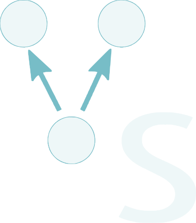

Visual Structures
João Pedro Pianta
Orientador: Alexandre Agustini
Bacharelado em Ciência da Computação


João Pedro Pianta
Orientador: Alexandre Agustini
Bacharelado em Ciência da Computação
Esta ferramenta surge frente a dificuldade de estudantes em início de carreira no estudo de algoritmos e estruturas de dados. A área exige uma mudança de pensamento que requer muita dedicação daquele que a estuda. Visual Structures vem para auxiliar o estudante na construção de algoritmos, possibilitando a sua visualização. Diferente de ferramentas existentes, que possuem bibliotecas voltadas para representações gráficas, esta ferramenta faz uso de sua própria linguagem integrada a um visualizador, para que o estudante foque apenas no importante, o algoritmo.
A linguagem criada é de domínio específico, bastante concisa, com o objetivo de descrever somente estruturas de dados e seu funcionamento. Com descrição de estruturas chamadas Nodo e suas referências, a linguagem mostra, em um visualizador, a representação gráfica da função escolhida para ser executada. Por meio de passos, o usuário também pode avançar e recuar a visualização a cada computação realizada, para um total entendimento da execução da função. Dentre estruturas conhecidas que podem ser descritas usando Virutal Structures podem ser citadas listas encadeadas, pilhas, árvores e grafos.